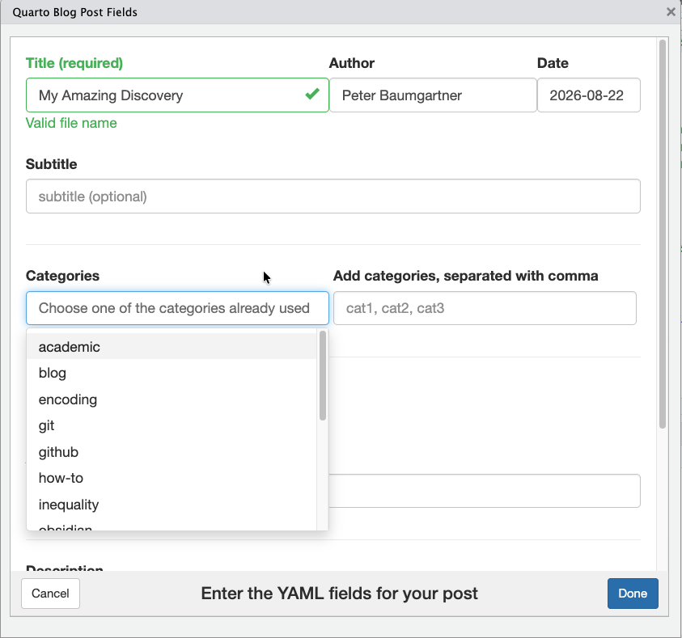

Creating Quarto Blog Posts with qpost
Peter Baumgartner
2026-09-03
Source:vignettes/quarto-blog-posts.Rmd
quarto-blog-posts.RmdThis article is a detailed reference for qpost(). If
you’re new to the package, start with Get started
with qpost for a quick introduction; come back here when you want
the full picture of the dialog fields, configuration options, and
troubleshooting steps.
qpost() requires a pane-capable IDE —
RStudio or Positron — because it uses
rstudioapi to display the dialog and open the resulting
file. Running it from a plain R console, Rscript, or a
non-interactive script will raise an error.

The qpost() dialog window
When to use qpost()
qpost() is designed for: - Quarto blog projects with a
typical directory structure (posts/ directory with per-post
subdirectories) - Users who want to avoid manual YAML formatting and
directory creation - Iterative workflows where you create multiple
posts
If you’re building a single static website or prefer manual control
over post structure, qpost() may be overkill.
Comparison with quarto::new_blog_post()
Quarto itself provides quarto::new_blog_post(), a
function that creates a new blog post. Here’s how qpost()
improves upon it:
| Feature | quarto::new_blog_post() |
qpost() |
|---|---|---|
| Interactive UI | Command-line only; requires remembering all arguments | Interactive dialog with form fields and dropdowns |
| Title slug generation | You provide the slug manually | Auto-generates kebab-case slug from title |
| YAML front matter | Minimal; you fill in metadata manually | Pre-populates with your defaults (author, categories) |
| Category management | No built-in support | Dropdown + ability to add new categories on the fly |
| Optional image copy | Not supported | Copies an image file into the post directory if provided |
| Persistence | No configuration | Saves your defaults to .Rprofile for reuse |
| Customization | Limited | Respects qpost.* options for author, draft status,
etc. |
Example
Using quarto::new_blog_post(), you must
remember the exact argument names and type everything out:
quarto::new_blog_post(
title = "My Amazing Discovery",
slug = "my-amazing-discovery",
author = "Peter Baumgartner",
publish_date = "2026-08-22"
)Using qpost(), you fill in the same
information through the dialog shown above — see Basic Usage for how to launch it and The qpost() Dialog for the full list of
fields.
Prerequisites
-
RStudio 1.1 or later, or Positron
(both provide the
rstudioapiintegrationqpost()needs to open the dialog viewer and the created file) - A Quarto blog project with a
posts/directory - The qpost package installed
install.packages("qpost")qpost() is not currently supported in plain VS Code or a
terminal R session, since neither provides the rstudioapi
hooks the function depends on.
Basic Usage
Running qpost() from the Console
In both RStudio and Positron, this opens the interactive dialog in the Viewer pane (or as a separate dialog window, depending on your viewer settings).
Running qpost() as an Addin
Once installed, qpost registers as an RStudio Addin under Addins > Create Quarto Post.
In RStudio, you can assign a keyboard shortcut to it
for quick access: 1. Go to Tools > Modify Keyboard
Shortcuts 2. Search for “Create Quarto Post” 3. Click in the
Shortcut field and press your desired key combination
(e.g., Ctrl+Shift+Alt+Q) 4. Click
Apply
In Positron, addins from installed packages are available through the Command Palette: open it and run R: Run RStudio Addin, then choose “Create Quarto Post” from the list. Positron also lets you assign a custom keybinding to that command.
Either way, you can create a post from anywhere in your project with a single shortcut.
The qpost() Dialog
When you run qpost(), you see a form with the following
fields:
Required Fields
-
Title — The post title (e.g., “My Amazing
Discovery”)
- Used to generate the directory slug automatically
-
Author — Pre-filled from
getOption("qpost.author")if set- Can be edited before creating the post
-
Date — The publication date
- Defaults to today’s date
- Format:
YYYY-MM-DD
Optional Fields
-
Subtitle — A longer description (optional)
- If provided, added to the YAML front matter as
subtitle:
- If provided, added to the YAML front matter as
-
Description — A brief summary (optional)
- Appears in the YAML as
description:
- Appears in the YAML as
-
Categories — Existing and/or new categories
(optional)
- Dropdown shows existing categories from your blog
- Type new categories separated by commas to add them
- Multiple selections are comma-separated in the YAML
-
Image — Path to a featured image file (optional)
- Browse your filesystem to select an image
- If selected, the file is copied to the post directory as
image.*(preserving extension) - The YAML front matter includes:
image: image.png(or.jpg,.svg, etc.)
-
Draft — Checkbox to mark the post as draft
- Checked by default if
getOption("qpost.draft")isTRUE - Draft posts are not rendered in Quarto output
- Checked by default if
Configuration via .Rprofile
You can set defaults in your project-level
.Rprofile (in the blog’s root directory) to avoid typing
the same information repeatedly:
# Project-level .Rprofile for your Quarto blog
options(
qpost.author = "Your Name",
qpost.verbose = TRUE,
qpost.draft = FALSE,
qpost.show_empty_fields = TRUE
)Option Reference
| Option | Type | Purpose | Recommended location |
|---|---|---|---|
qpost.author |
Character | Default author name | Global ~/.Rprofile
|
qpost.verbose |
Logical | Print status messages during post creation | Global ~/.Rprofile
|
qpost.draft |
Logical | Default draft status for new posts | Project .Rprofile
|
qpost.show_empty_fields |
Logical | Show optional fields in the dialog even if empty | Global ~/.Rprofile
|
Global defaults are best set in your personal
~/.Rprofile and apply to all projects.
Project defaults go in the project’s
.Rprofile in the blog root directory.
Output Structure
When qpost() creates a post, it generates:
posts/
my-amazing-discovery/
index.qmd # Main post file with YAML front matter
image.png # (if you selected an image)Generated YAML front matter
---
title: "My Amazing Discovery"
author: "Peter Baumgartner"
date: 2026-08-22
draft: false
categories: ["research", "quarto"]
description: "A brief summary of the post"
image: "image.png"
---The index.qmd file opens in the editor immediately (in
RStudio or Positron), ready for you to start writing.
Verbose Output
If getOption("qpost.verbose") is TRUE
(recommended during setup), qpost() prints status
messages:
✓ Directory created: posts/my-amazing-discovery/
✓ Image copied to posts/my-amazing-discovery/image.png
✓ Post created: posts/my-amazing-discovery/index.qmdThis helps you confirm that the post was created correctly.
Troubleshooting
“Cannot find _quarto.yml”
qpost() searches up from the current working directory
to find your Quarto blog’s _quarto.yml file. If it can’t
find one, ensure: - You’re opening the RStudio project (or Positron
workspace) for your blog (not a parent directory) - The
_quarto.yml file exists in the project root - Your working
directory is set to the project root
“Category dropdown is empty”
qpost() reads existing categories from your blog’s
posts. If you have no posts yet, or all posts have empty category
fields, the dropdown will be empty. You can still type new categories in
the text field.
“Author field is empty”
Set qpost.author in your .Rprofile:
options(qpost.author = "Your Name")Then restart R or reload the project.
Next Steps
- Write your post content in
index.qmd - Run
quarto previewto see your blog locally - Use
add_coins()to add bibliographic metadata for Zotero compatibility (see the “Adding COinS Metadata for Zotero” vignette)
See Also
-
add_coins()— Add COinS metadata to blog posts for Zotero import - Quarto Blog Documentation